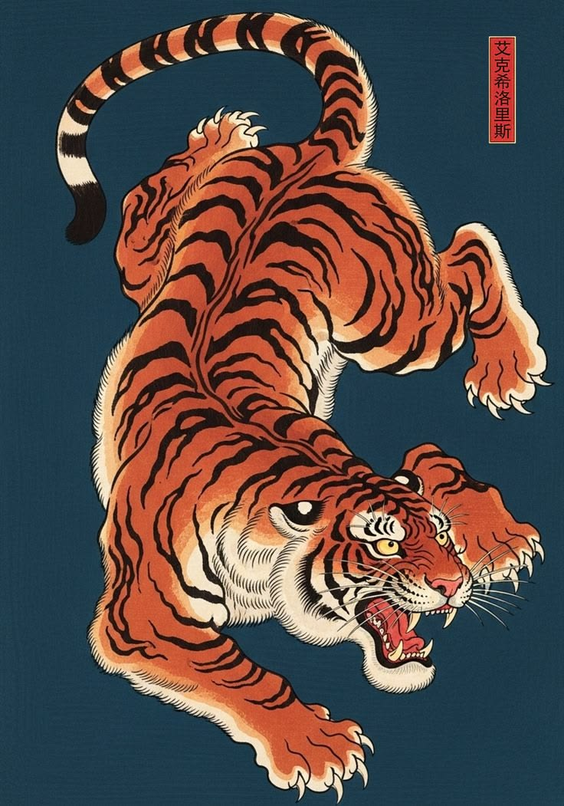

Introduction to Irezumi
Irezumi is a traditional Japanese tattoo style known for large designs, bold outlines, and detailed images that often cover major areas of the body. Common designs include dragons, koi fish, tigers, waves, flowers, and masks. These images are chosen not only for beauty, but also for the meanings and stories connected to them.
This website introduces the history, symbols, visual elements, and cultural background of Irezumi. It is meant for beginners who want a clear starting point before studying the style further or considering a Japanese-style tattoo design.
History of Irezumi
Learn how Japanese tattooing changed from early body marking to the elaborate art form of the Edo period.

Design Elements
Preview the waves, flowers, bold outlines, and background flow that will be expanded later in the site.

Symbols and Meanings
Review common images such as dragons, koi, tigers, eagles, and flowers with beginner-friendly meanings.